東京大学 M1薬理学講義「薬理学から臨床研究へ」
2026年10月21日
東京大学病院 臨床研究推進センター長・教授
齋藤 俊樹
1
9/30
総論1・2
10/1
総論3、骨格筋
10/2
心筋、血管平滑筋、自律神経1
10/6
局所麻酔薬、神経筋接合部、自律神経2
10/7
循環薬理1・2、薬物代謝学
10/8
循環薬理3・4、抗細菌薬
10/9
自律神経3、特別講義1、抗腫瘍薬
10/13
中枢神経概論1・2、研究室紹介
10/14
鎮静・睡眠・てんかん、パーキンソン病
10/15
うつ病、中枢特論、内分泌1
10/16
内分泌2、内分泌特論
10/19
血液作用薬、オータコイド、利尿薬
10/20
放射線、免疫調節薬、臨床薬理
10/21 今日
抗ウイルス薬、濫用薬物、臨床研究入門
10/22
毒物、特別講義2
10/23
実習説明会
10/26〜
薬理学実習
11/24
本試験
2
| 薬理学で学んだこと | 臨床研究で使われる場所 |
|---|---|
| 総論（効果と副作用、薬物動態） | 第I相試験で、血中濃度と安全性を実際に測る |
| 薬物代謝学 | 用量の決め方、個人差、薬物相互作用の試験 |
| 循環・中枢・内分泌の各論 | その病気で「何をもって効いたとするか」を選ぶ |
| 抗腫瘍薬 | 腫瘍が小さくなることと、長生きすることは違う |
| 臨床薬理（昨日） | 今日はその続きから始める |
薬理学
◆
薬が体に何をするか
・
受容体、作用機序、薬物動態
臨床研究
◆
その薬が人の役に立つかを、どう確かめるか
・
比べ方、守り方、責任の持ち方
3
4
◆
臨床医：シンプルに患者さんに最善の医療を施す
◆
基礎研究者：生命科学の進展を担うもの、神様との知恵比べ
◆
臨床研究の研究代表者：日常医療を直接進展させる
◆
医系技官：国家公務員、仕組みを改善することによる医療や医学研究の進展を図る
◆
政治家：国民の声を汲み取り、仕組み自体を作り、実施させる
◆
起業家：（医療に関する）サービスや製品を作ることにより医療の進展を図る
◆
その他、どんな仕事でも兼業可能
5
研究代表医師でなくてもできる「ARO機能」が、大きな負担になっている
研究計画書の作成
メディカル
ライティング
資金獲得
安全性管理
品質管理
契約交渉
事務処理
PMDA・IRB対応
→ 研究代表医師が臨床研究の核心に専念できるインフラを、AROとして整備・提供する
他の機関と共同して Open Innovation を進める
6
AROを構築・運用し、PI数百名と面談をした結果、研究代表者に必要な素養は3つあるが、それぞれ独立した能力であり、全てを兼ね備えることは非常に稀であり困難であることが分かった。
1.
統計学的な素養があり、メディカルクエスチョンを適切に設定できる能力
2.
仲間を集って、症例集積を促進する能力
3.
結果を英文論文として書き上げる能力
この3点はPI（医師）でないと出来ない、あるいは非常に実施困難な能力。
7
センターの活動を通じて、次の4つの成果を日本全体で最大化する
1
薬事承認
新しい治療を患者さんに届ける
2
診療ガイドラインに引用される臨床研究
医療の標準を作る
3
国際的な学術論文
世界へ知を発信する
4
特許
知財を守り育てる
https://www.ut-crescent.jp/center/greeting/
8
◆
Claude Code, Cowork（≠ claude.ai）使っていますか？
・
頑張ってバイト、親のスネをかじって使い倒してください
・
@g.ecc.u-tokyo.ac.jp を用いて5人集まって$20〜$25（約3,000〜3,800円）で運用
・
$110（約1万7千円）の Max プランで運用
・
https://www.youtube.com/@aivtuber2866/search?query=claude%20code
◆
自分がやろうとしているありとあらゆることを Claude Code を通じて処理することをおすすめします
◆
余裕があれば、Andrej Karpathy の「LLM Knowledge Bases」を実装してみてください
・
自分の第二の記憶が維持され、将来的にジョジョのスタンドがサービスされる際の貴重な情報になります
・
https://x.com/karpathy/status/2039805659525644595
・
すぐに試せるひな形：https://github.com/tosh13/llm-wiki-template
9
自己紹介
10
1
11
◆
骨髄移植が通常医療になり始めたタイミングで、血液内科医として化学療法、骨髄移植等の臨床経験（血液内科専門医）
◆
基礎研究・病態研究
・
大学院にてNotch遺伝子を中心に免疫学を研究。Notch2 cKOマウスを作成・解析
・
その際、複数の他の研究室の技術を組み合わせ、コンディショナルノックアウト（cKO）マウスの作成系をいちから立上げ。この技術基盤は、その後の東大血液・腫瘍内科の研究発展に貢献
・
Notch2 cKOマウス：Immunity, Nature Immunology, PNAS／AML-1 cKOマウス：Nature Medicine
◆
骨髄移植の病態研究をできる場所を求め渡米（2003〜2008年、ボストン）
・
骨髄移植マウスモデル、in vivo imaging。ビザは J1 → H1 → 永住権
12
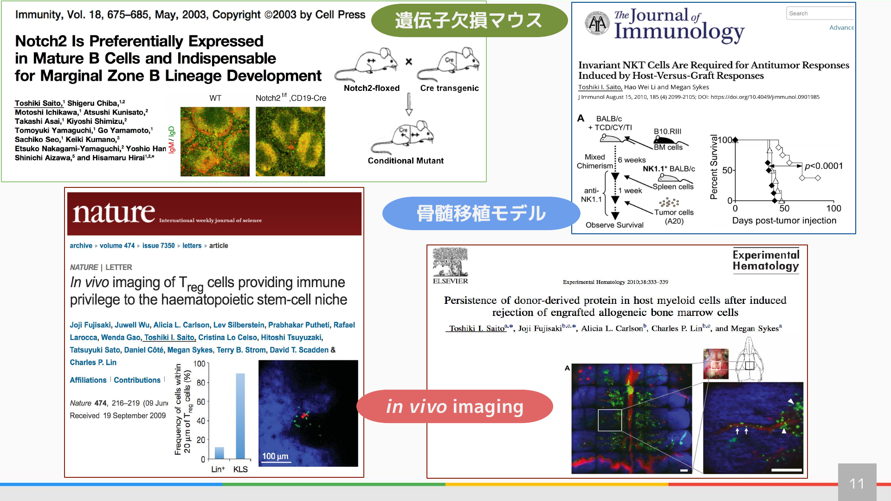
13
◆
TRリサーチ
・
マウスモデルでの結果を元にFIH（First in Human）臨床試験のグラント申請書執筆補助
・
先進医療BでのNKT細胞療法に関する第II相ランダム化比較試験のため、細胞加工センター（CPC; Cell Processing Center）の立上げを行った
◆
ふりかえると
・
これらの臨床経験、基礎研究経験があることが、臨床研究を推進する際に研究者の先生方の思考に寄り添うことができる強みであること
14
2
15
◆
NHO名古屋医療センター データセンターでの悩み事（2010年）
・
小児白血病試験「ALL-02」ではFAXで送られてくる約2万枚の症例報告書を2人のデータマネージャー（DM）でクリーニング！
・
次期試験「ALL-B12」では参加施設から直接EDCシステム（Webアプリケーション）にデータを入力してほしいが、高額で委託不可能
◆
プログラマとして関与
・
DMが記載した、FAXで受け取ったデータを入力するためのデータベース（DB）の仕様書を閲覧
・
私：「これだけの仕様書が書けるDMがいるのであれば、DMのみでDB構築可能なEDCを作ってしまえば？」、ベンダー選定→プロトタイプを作成（2011年）
16
◆
試験数：202試験
・
医師主導治験：13試験（5品目で薬事承認取得）
◆
症例報告、登録・割付、安全性情報管理、利益相反管理、関連文書管理、QOL調査が可能な包括的IT支援システムとして稼働
◆
全ての試験支援について、Ptoshを含むITシステムを導入することにより、データセンターの大幅な業務効率化
◆
臨床研究とITの両分野に深く精通している、プログラマである私が主導していたことが、IT開発と導入における成功の鍵
| Ptosh（2026年4月1日現在） | 合計 |
|---|---|
| 診療科数 | 3,400 |
| 施設数 | 2,490 |
| ユーザ数 | 14,129 |
| 疾患登録数 | 723,286 |
| 試験数 | 202 |
17
3
18
◆
データセンターでは試験ごとに毎回異なる変数と入力選択肢をDBに定義
◆
そのため、統計解析プログラムも毎回作り直し
◆
医療情報データの世界標準は無いのか？
◆
専門家にヒアリングしたところ、CDISC標準を紹介していただいた（2011年）
◆
CDISC標準とは
・
30年近い歴史を持ち、医薬品をFDA/PMDAに申請する際に準拠が必要なデータ形式
・
新薬の薬事承認に必要なため、全疾患領域の治験・臨床研究のデータ標準化に対応している
・
治験だけではなく観察研究やRWDもスコープに入った標準規格
・
実データの標準として、実務に耐える代替標準はCDISC標準以外に実在しない
・
同一疾患領域でCDISC標準を利用すると、3回目以降はDB設計・実装コストが半分以下に
19
◆
CDISC Japan User Group（CJUG）
・
2012年より毎月会合にて活動
◆
Japanese CDISC Coordinating Committee（J3C）
・
2018〜 J3C member：CDISCボードメンバー2名、アカデミア 4名、製薬メーカー 4名、CRO 3名、ITベンダー 1名の計14名より構成
・
2021〜 J3C vice chair
◆
AMED齋藤班「医薬品等規制調和・評価研究事業」にて研究開発代表者
・
令和元年度「アカデミアにおけるCDISC標準利用推進のための施設間連携に関する研究」
・
令和4年度「アカデミアにおけるCDISC標準利用促進に関する研究開発」
・
令和7年度「市販後安全対策のためのFHIR・CDISC・SS-MIX2連携による標準化RWD基盤構築と実装研究」
20
◆
Non-profit Organization（NPO）https://vivli.org/
◆
Registered Trial: 8,600+（今年の6月は7,700+）
◆
Publication using Vivli: 600+（今年の6月は490+）
◆
External Advisory Committee:
・
UCSF, WHO, MIT, MRC, Liverpool, Duke, Boston Univ., Vanderbilt, Italian National Research Council (CNR)
・
Old member：NEJM, CDISC, Peking University
21
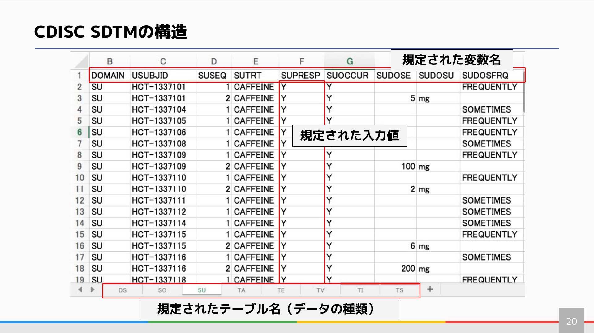
22
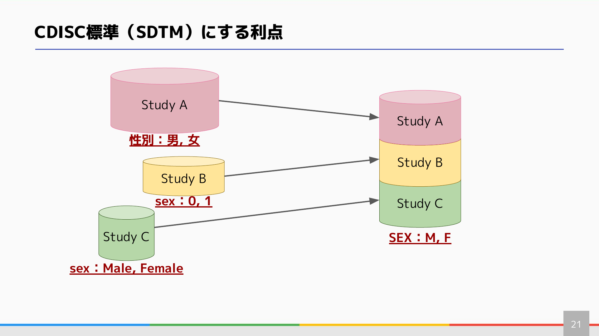
23
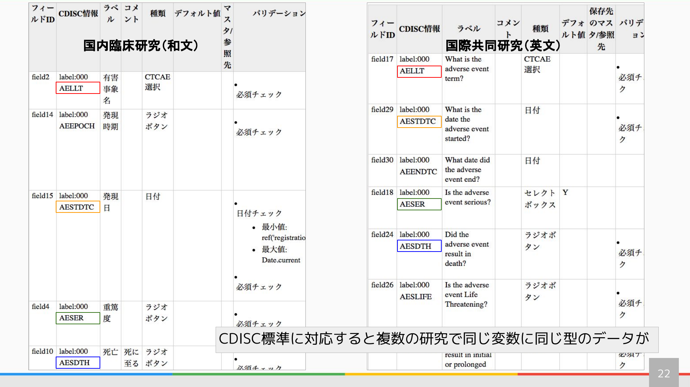
24
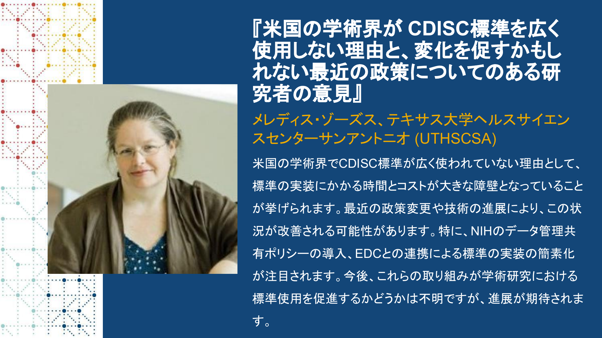
25
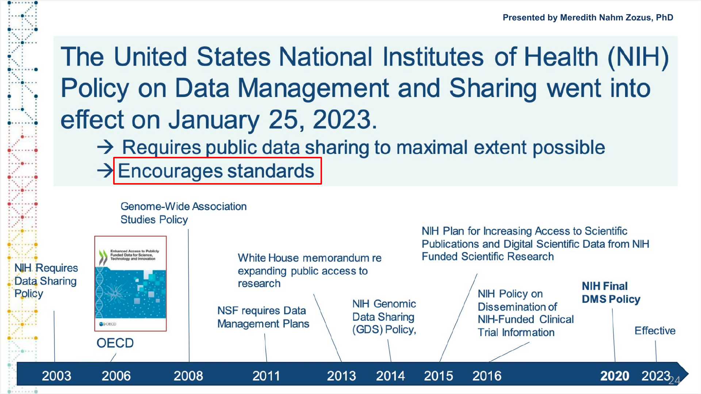
26
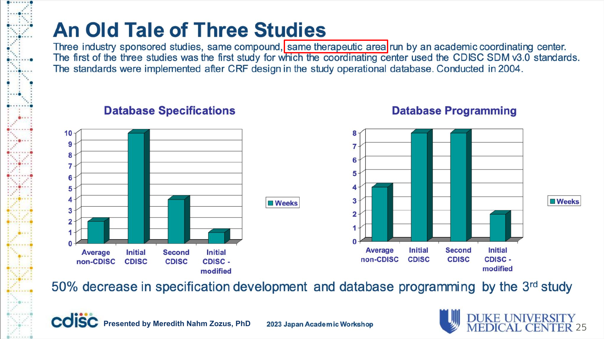
27
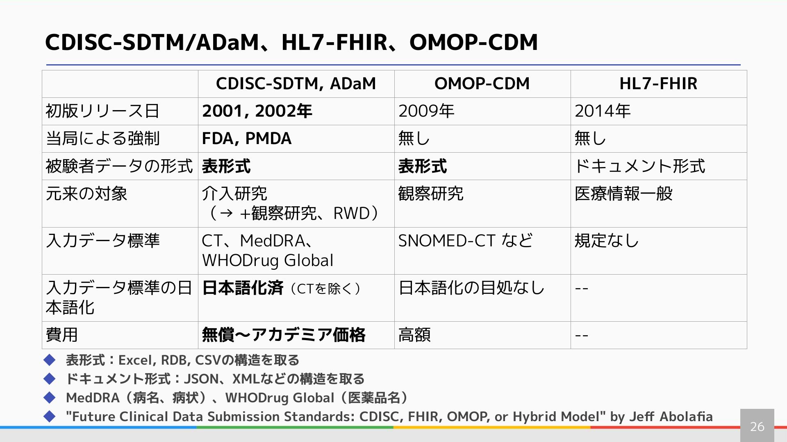
28
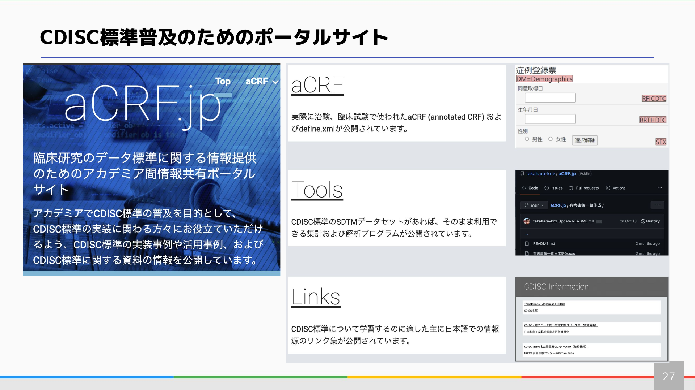
29
ICH-GCP(E6)という発明
30
1
臨床研究における最も大切な役割分担は
1. Sponsor,
2. Investigator（研究責任医師）,
3. IRB の3者
31
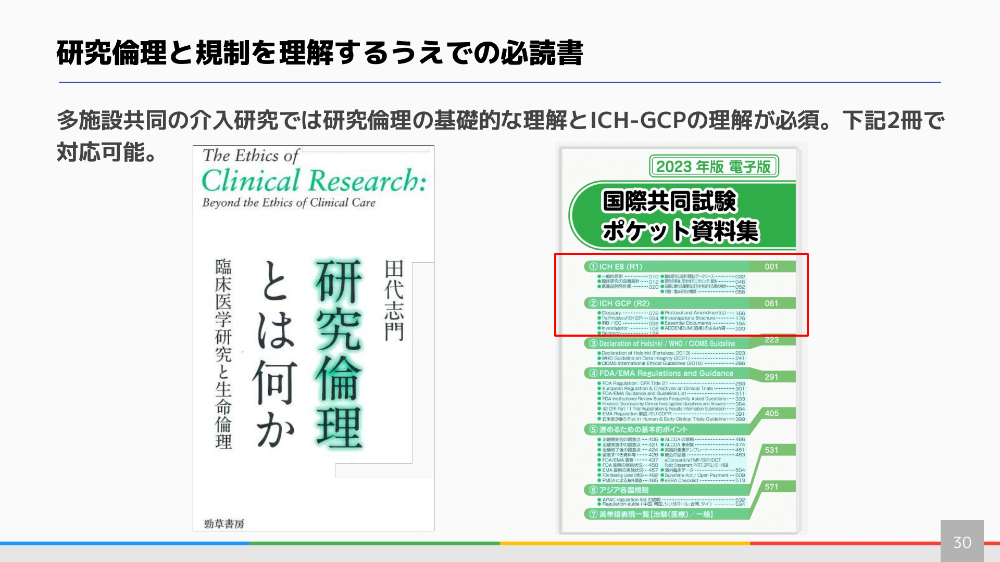
32
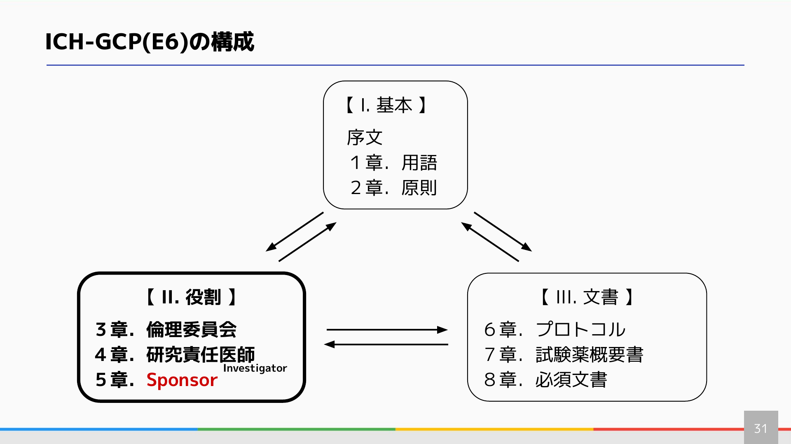
33
Good Clinical Practice (GCP)は、人を対象とする研究の計画、実施、記録、及び報告に関する倫理的及び科学的な質の国際基準である。本規準を遵守することによって、被験者の人権、安全及び福祉がヘルシンキ宣言に基づく原則に従い保護されること及び臨床研究データの信頼性が保証される。
34
◆
Sponsor:「臨床試験の立ちあげ、運営及び（又は）資金に責任を負う個人、会社、研究機関、又は団体。」つまり、臨床研究の権利義務主体（clinicaltrials.gov: responsible party）
◆
Investigator:「臨床研究機関において、臨床研究の実施に関して責任を有する個人」つまり主に医療行為の責任を取る個人
◆
Sponsorの典型例：製薬メーカー、法人格を持つ臨床研究グループ、PIの所属する大学、PIの所属していない強いARO機能をもつアカデミア
◆
欧米にて多施設共同研究では個人がSponsorになることはまず無い。法人（大学、研究グループ、政府機関など）がSponsorになる
35
◆
臨床試験の実施責任（Sponsor, 法人）と、各病院内での医療行為の実施責任（Investigator, 個人）を分離したところ
◆
3つしか無い独立した役割の一つとして、IRBを定義したこと
◆
役割を3つに絞って、他の定義をしなかったこと
◆
逆に言えば定義がされていないものもある
・
研究代表医師（研究調整医師のみが定義され、プロトコル内容や管理等の責務なし）
・
プロトコル作成委員会
・
効果安全性管理委員会（用語の定義のみ）
◆
定義しないことも大切。なぜならば定義しないことにより柔軟な運用が可能になるため
36
◆
当該臨床研究の権利義務主体
・
権利：当該研究から得られるデータなど成果物の所有権。最終的な実施責任のすべてを負う代わりに、試験の成果はSponsorに帰属する
・
義務：当該研究の実施責任。例えばプロトコルのデザイン不備で被験者が損害を被った際に訴えられるのは、研究代表医師やプロトコル委員会委員ではなく、法人としてのSponsor
◆
Sponsorを研究代表者やプロトコル作成委員等から分離できる構造の利点
・
医師は品質管理やプロジェクト遂行のプロではない
・
Sponsorの要件を見れば、一個人が責任を持って管理できるような内容ではないことは明白
・
組織を作って法人として責任を持たねば困難な責務が複数存在する
37
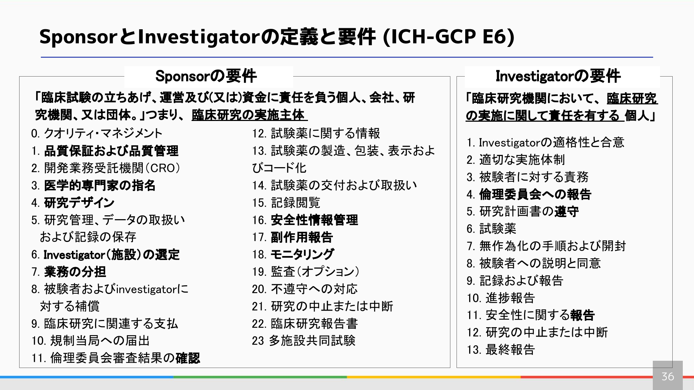
38
◆
臨床試験の実施責任（Sponsor, 法人）と各病院内での医療行為の実施責任（Investigator, 個人）を分離したところ
・
これにより医師（Investigator）は被験者対応と医療行為に集中できるようになり、
・
PI個人では責任を負うのが困難な、品質管理、データマネジメント、モニタリング、安全性管理など管理要件を含む試験の実施責任については、Sponsor能力を組織として整備した法人にその責務を委ねることにより、試験規模自体を拡大しやすくなった
・
残念ながら現在の法令（臨床研究法、自ら治験J-GCP）および倫理指針ではSponsorの概念が導入されておらず、試験実施の最終責任が個人にふりかかる建付けとなっている
・
ちなみにSponsorは当該試験の実施主体であり、管理だけしているわけではない。これはビルを建てる建築会社が、実施は大工や電気屋がしており管理だけしている、という詭弁と同じである
39
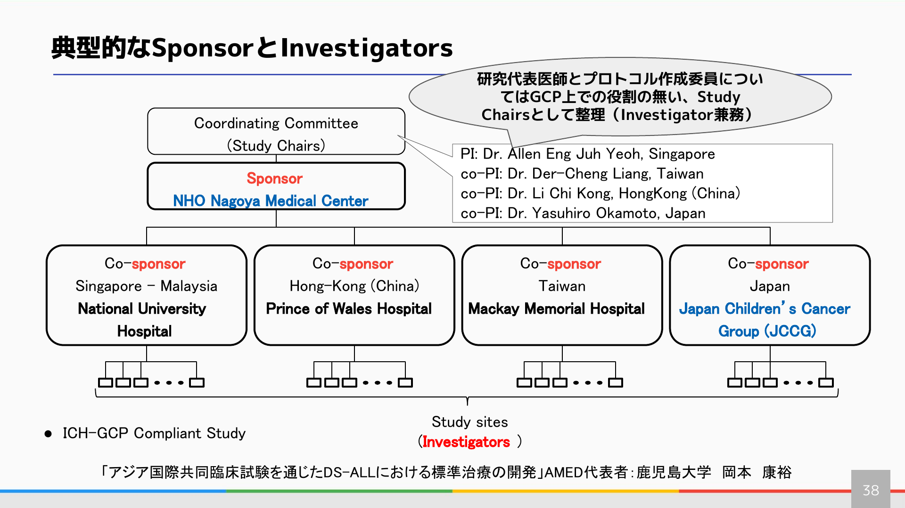
40
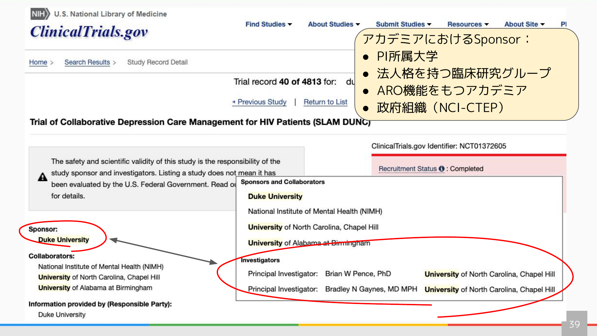
41
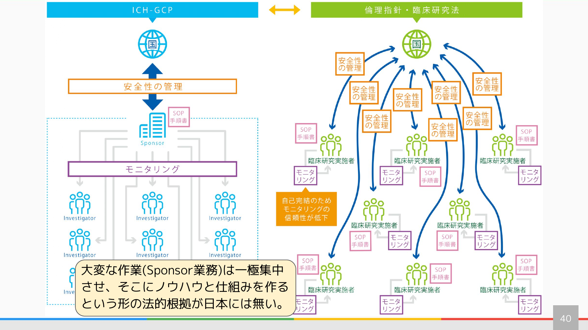
42
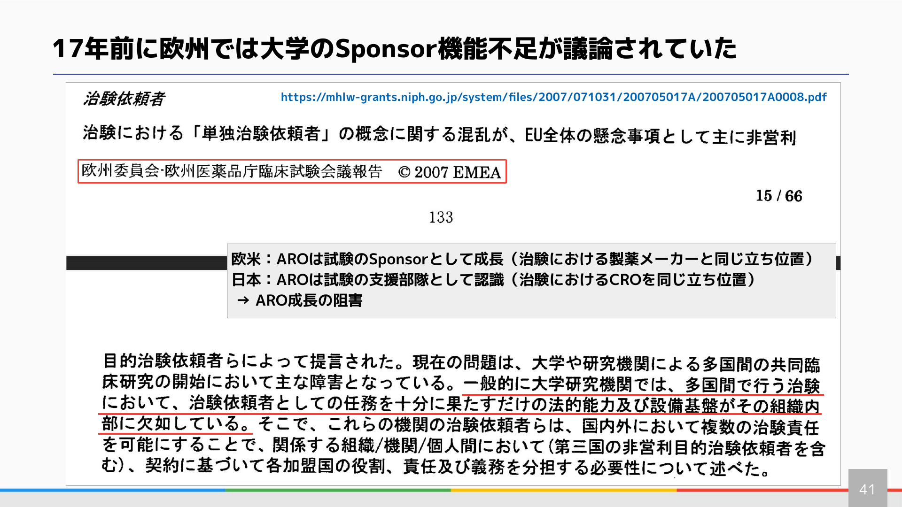
43
◆
面白いもの見つけた。17年前のレポート。すでに「大学がPrimary Sponsorとして機能が足りないこと」の指摘がヨーロッパで議題になっている
◆
その後、現在まで欧米の大学はPrimary Sponsorの機能を満たすべく、AROとして育ってきている
◆
日本では大学がPrimary Sponsorどころか、AROはCROと対をなすような「支援組織として」成長するものと誤解している。更にはPrimary Sponsorが「個人のみ！」という自ら治験の省令GCPおよび臨床研究法によって、大学等アカデミアAROのPrimary Sponsorとしての成長が妨げられている
◆
諸外国が株式会社を作ってスケールしているのに、日本だけは個人事業主に限るという法律で自らの首を締めているのが現状
44
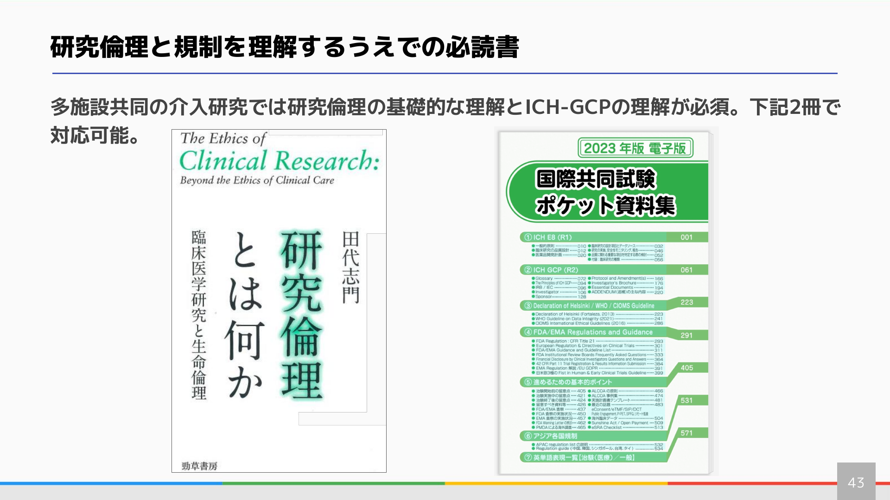
45
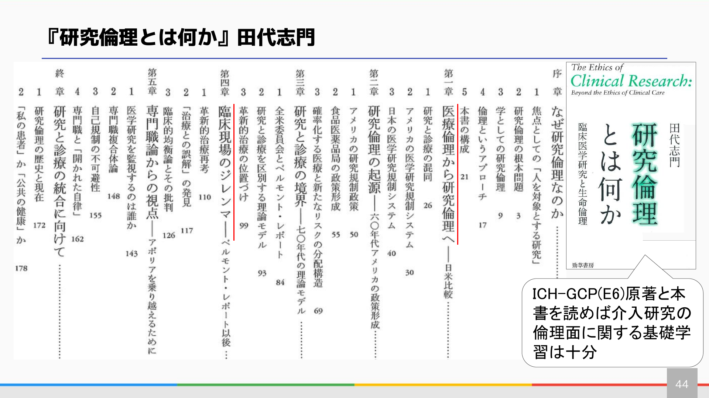
46
2
規制も倫理も、誰かが失敗した後にできた
47
◆
きっかけ：誰かが悪いことをしたから
◆
「誰」が「どういう悪いこと」をしたのか
◆
「国の機関（という最も信頼すべき機関、国の機関は原則として弱者救済機関）」が
◆
こともあろうに「弱者（被験者）」に「害を与えていた」事例が
◆
米国NIHの上部組織である公衆衛生局が「治療処置」と詐称した梅毒患者の人体実験を行っていた。タスキーギ事件
◆
IRBとICのルールが強化
48
◆
背景と目的
・
期間：1932年〜1972年。場所：アラバマ州タスキーギ
・
対象：アフリカ系アメリカ人男性600名（399名の梅毒患者、201名の対照群）。目的：治療しない場合の梅毒の自然経過を観察
◆
研究の実施
・
実施主体：米国公衆衛生局（Public Health Service, PHS）が主導
・
治療の拒否：ペニシリンの発見後も患者への治療を意図的に行わず。誤情報：患者には「悪い血」の無料治療を提供すると誤った説明
◆
研究の終結
・
1972年にメディアが実態を暴露。研究の即時終了と米国政府による公式謝罪および賠償
◆
影響と教訓
・
インフォームド・コンセントの重要性が強調。ベルモントレポート：1979年に発表、倫理的ガイドラインを示す
49
◆
壊血病の水兵12人を2人ずつ6組に分け、それぞれ違うものを与えた
・
りんご酒、硫酸の希釈液、酢、海水、香辛料の練り物、オレンジとレモン
◆
オレンジとレモンの組だけが速やかに回復した
◆
同じ時期に、似た患者を、治療だけ変えて比べた
◆
原因のビタミンCが見つかるのは、ずっと後のこと
→ 機序が分からなくても、比べれば効くかどうかは分かる
50
海軍：高木兼寛
◆
原因は分からないまま、食事を疑った
◆
練習艦の航海で食事を変えて比べ、脚気をほぼなくした
陸軍と東大の主流
◆
当時最先端の細菌学から、感染症と考えた
◆
白米中心の食事を続け、日清・日露戦争で多くの兵士が脚気で亡くなった
→ 原因のビタミンB1を米ぬかから取り出した一人は、東大農学部の鈴木梅太郎（1910年）
51
英国医学研究評議会、肺結核の試験
◆
薬は少量しか手に入らず、全員には使えなかった
◆
だから、誰に使うかをくじで決めることが許された
◆
今の臨床試験は、ほぼすべてこの設計の子孫
なぜ「くじ」が要るのか
◆
医師が選ぶと、良くなりそうな患者を新薬に回してしまう
◆
すると薬が効いたのか、患者が元々軽かったのか、区別できない
52
1947年 ニュルンベルク綱領
◆
ナチス・ドイツの医師による人体実験を裁いた裁判から生まれた
◆
第1項「被験者の自発的な同意は、絶対に欠かせない」
1964年 ヘルシンキ宣言
◆
世界医師会が定めた
◆
外から押し付けられたのではなく、医師自身が作った規範
→ ただ、規範ができても、事件は止まらなかった（タスキーギは1972年まで続いた）
53
3
「被験者リスク」から見た
54
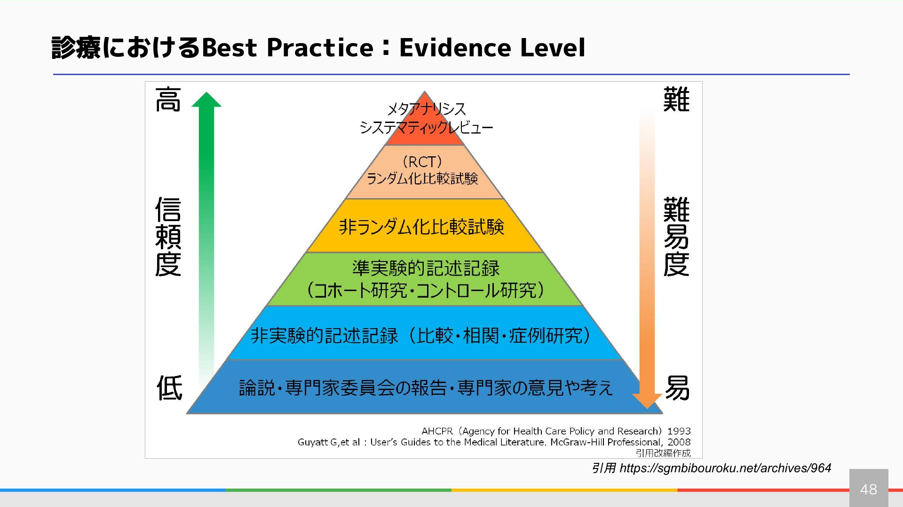
55
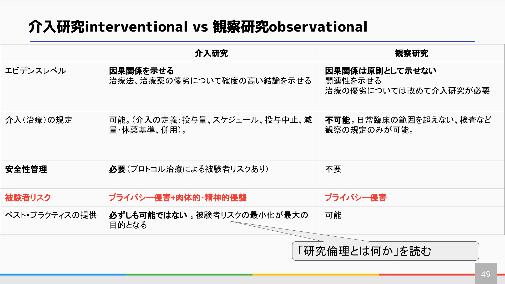
56
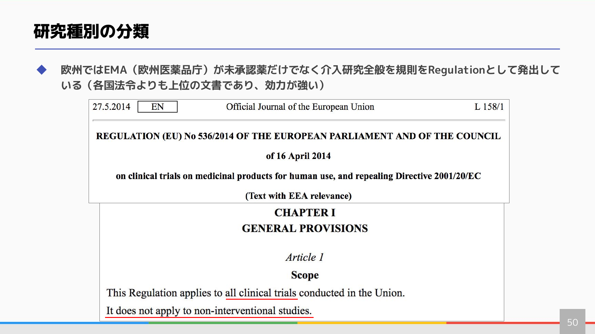
57
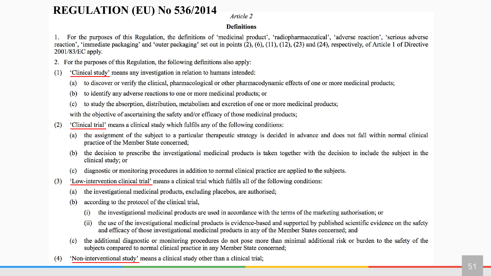
58
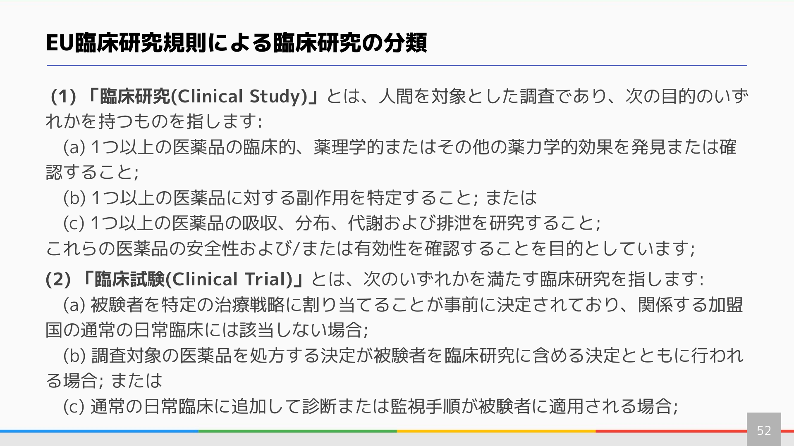
59
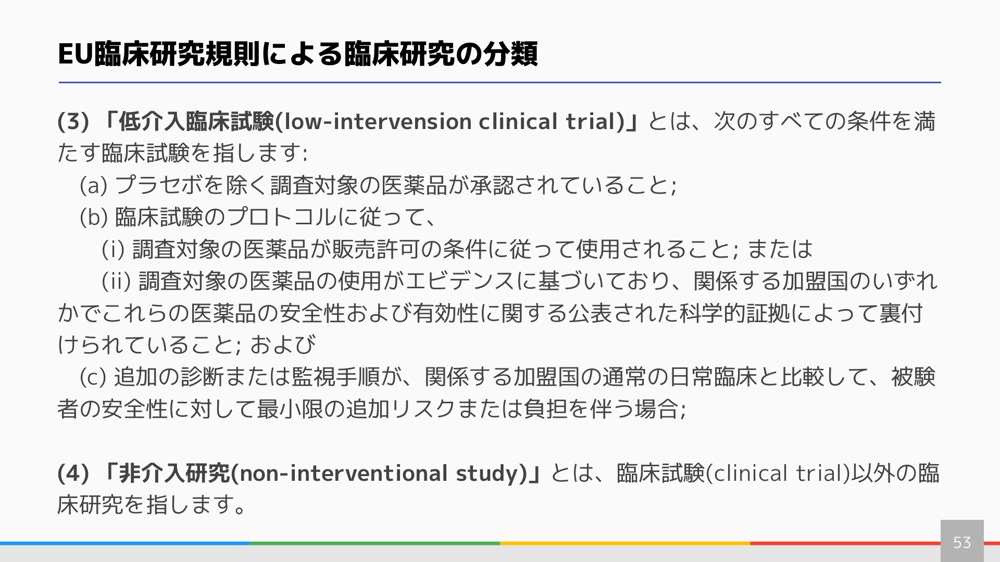
60
◆
診療
・
目の前にいる1人の患者の最善を願う
・
Evidenceに基づいた上で、個々の患者の背景、都合に合わせて治療（介入）計画を規定
◆
臨床研究（介入研究）
・
被験者の協力の下、医学の発展とその他大勢の患者のケアの改善が図られる事にあり、個別の患者の最善の利益を追求する日常の医療実践とは質的に異なる課題を有する
・
Fried C. 1974, Medical Experimentation（=1987, 内藤・光石訳『医学実験』篠原出版）
◆
要は
・
患者への治療選択は、担当医師の責任のみならず、研究計画自体にも責任が存在することが根本的な違い → 安全性管理（有害事象）の概念、GCP上のSponsorの概念の発生
61
結果1
アイスクリームがよく売れる
→
本当の原因（交絡）
暑い日
→
結果2
水の事故が増える
◆
アイスクリームと水の事故には関係があるが、一方が他方の原因ではない
◆
薬を飲んでいる人が長生きでも、元々元気な人が飲んでいただけかもしれない
→ くじで分けると、知っている要因も知らない要因も均等になる。だから因果が言える
62
コホート研究（前向き）
◆
原因の有無で分け、その後を追いかけて結果を数える
・
例：喫煙する人としない人を追い、肺がんを数える
症例対照研究（後ろ向き）
◆
結果のある人とない人を集め、過去の原因を比べる
・
珍しい病気に向く。思い出し方の偏りが入りやすい
→ 証拠の強さは、おおむね ランダム化比較試験 ＞ コホート ＞ 症例対照 ＞ 症例報告
63
◆
診療としてのBest Practiceが実施できる臨床研究が観察研究
◆
研究計画書の介入に縛られ、担当医が思った治療ができないものが介入研究
・
それゆえ、治療は担当医だけでなく、プロトコルに責任が生じる。それゆえ、安全性管理という概念が生ずる
・
安全性管理をしなければならない研究は観察研究ではない
◆
介入研究と観察研究の間はきれいに分けることはできない
・
これはルールで決めてもらうものではなく、個々のケースで研究主体がどちらにするか決めて、責任を取れば良い
◆
欧米の法規制は純粋に被験者リスクに応じて存在する。日本は被験者リスクとは無関係の要因「薬事申請の有無」「製薬メーカーからの資金提供の有無」などで規制が変わる
◆
まずは観察研究か介入研究かを判断し、次に介入研究であれば国内法に従いながらもICH-GCP(E6)を拠り所に実施するのが、効率よくかつ品質を保つのに大切
64
用量、薬物動態、効き目、副作用、個人差
65
3万分の1
候補化合物から薬になる割合
9〜17年
うち人で試す治験に3〜7年
非臨床
細胞・動物
→
第I相
少数で安全性と薬物動態
→
第II相
少数の患者で効き目と用量
→
第III相
多数の患者で既存治療と比較
→
審査・承認
PMDA、厚生労働省
→ この流れは、配布した PMDA の冊子『ピムットと冒険！くすりがみんなに届くまで』にやさしく描かれている
66
1
動物で毒性が出ない量（NOAEL）
→
2
体表面積で、ヒトの量に換算
→
3
安全係数をかける（通常10分の1）
◆
第I相では、少量から段階的に増やす。例：3人ずつ投与して確かめる 3+3 デザイン
◆
2006年 英国 TGN1412：第I相で健康な6人が重篤に。受容体への作用から最初の量を決める考え方が加わった
67
縦軸：血中濃度 横軸：投与後の時間
◆
Cmax：最高血中濃度 → 副作用の出やすさ
◆
AUC：曲線の下の面積 → 体が受けた薬の総量
◆
半減期 → 1日に何回飲むか
68
代替評価項目 → 真の評価項目
◆
血圧が下がる → 脳卒中が減るか
◆
腫瘍が小さくなる → 長生きできるか
・
代替評価項目は早く測れるが、本当の目的と一致するとは限らない
実例：CAST 試験（1989年）
◆
心筋梗塞の後の不整脈（期外収縮）を抑える薬
◆
心電図の異常は確かに減った
◆
しかし、薬を飲んだ群の方が死亡が多かった
69
有害事象
◆
試験中に起きた好ましくない出来事は、薬との関係が不明でもすべて集める
◆
1万人に1人の副作用は、承認後に多くの人が使って初めて見つかる
個人差
◆
薬物代謝酵素の遺伝的な違いで、同じ量でも血中濃度が変わる
◆
例：CYP2C19 の働きが弱い人は、欧米より日本人に多い。だから日本人で確かめる試験が要ることがある
70
知識より行動、二次情報より一次情報
71
学生の立場で聞く
「私は東大医学部 M1 の学生です。臨床研究について、今何を学ぶべきですか」
教える側の立場で聞く
「東大の M1 の学生に、臨床研究推進センターの教職員は何を教えるべきですか」
◆
AI に聞けば分かることは、ここでは教えない。代わりに問いの立て方を
◆
同じ問いを複数の AI に投げて比べるのも有効
72
◆
かつては飛脚の足の速さや、力持ちの力が仕事の価値だった。鉄道と機械がそれを変えた
◆
覚えていること、速く計算できることも、同じ道をたどっている
◆
過渡期の今は、AI とロボットを人と一緒に使いこなす人がリードする
◆
人に残る価値
・
一次情報に、自分で触れること：論文そのもの、データそのもの、人そのもの
・
何をおもしろいと思うか、情熱を持つこと
73
◆
研究室に行くのに資格は要らない。メールを1通書けばよい
・
10月13日の基礎医学研究室紹介を、今日の話の後でもう一度見返してほしい
◆
臨床研究は、臨床医でも基礎研究者でもできる。両方やってもよい
◆
大学に残ることは貧しさを意味しない。兼業ができる
74
臨床研究推進センター長室は、いつでも開いている
75
見られる・聞ける
◆
もっと詳しい自己紹介
◆
臨床研究の立案の打合せに同席。本物の試験が組み立てられる場を見られる
◆
P1ユニット（臨床試験専用病床）の見学
一緒に作る
◆
AI エージェントの開発を手伝ってくれる学生を探している
◆
アルバイトとして有償で
→ 学年も理由も要らない。メールは1行でよい
76
◆
PMDA の冊子『ピムットと冒険！くすりがみんなに届くまで』：研究、治験、審査、承認の流れ
◆
国立病院機構の臨床研究成果パンフレット：臨床研究が実際に何を生んだか
◆
希望者に：『国際共同試験ポケット資料集』（講義の後、前で受け取ってください）
◆
10月29日（木）12:10–12:50 臨床研究者育成プログラム「新しい治療が患者に届くまで ― 臨床研究推進センターの仕事」
・
鉄門臨床講堂、昼食つき。今日の8日後
77
◆
今日話した細かいことは全て忘れてもらって結構です
・
気軽にメールで連絡して下さい。toshikisaito@g.ecc.u-tokyo.ac.jp
・
中央診療棟II 8F 臨床研究推進センター 研究統括室におります
◆
「研究倫理とは何か」をぜひ読んで下さい
◆
更に興味があれば、康永先生の「医療経済学」と「リアルワールドデータ」の本を読んでみて下さい
◆
Claude Code を今、使ってみてください
◆
大学生時代を謳歌して下さい
◆
好きなことを見つけて夢中になって下さい
78
どのパートが面白かったか、
教えてください
◆
所要時間は3分程度
◆
成績には使いません（記名は任意）
◆
ECCS アカウントでログインして回答
79
メール
toshikisaito@g.ecc.u-tokyo.ac.jp
予定表（公開カレンダー）
空いている午後なら、カレンダー招待を送ってくれても、メールでアポを取ってくれても OK
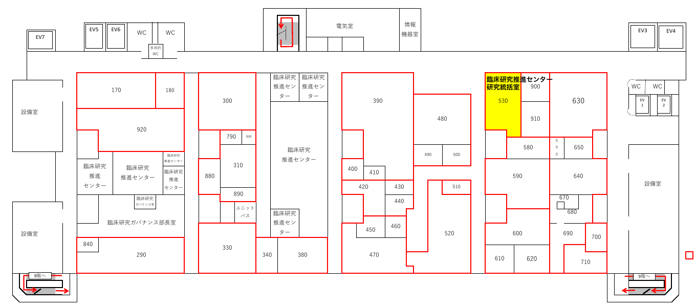
中央診療棟II 8階 研究統括室（530、黄色）
80